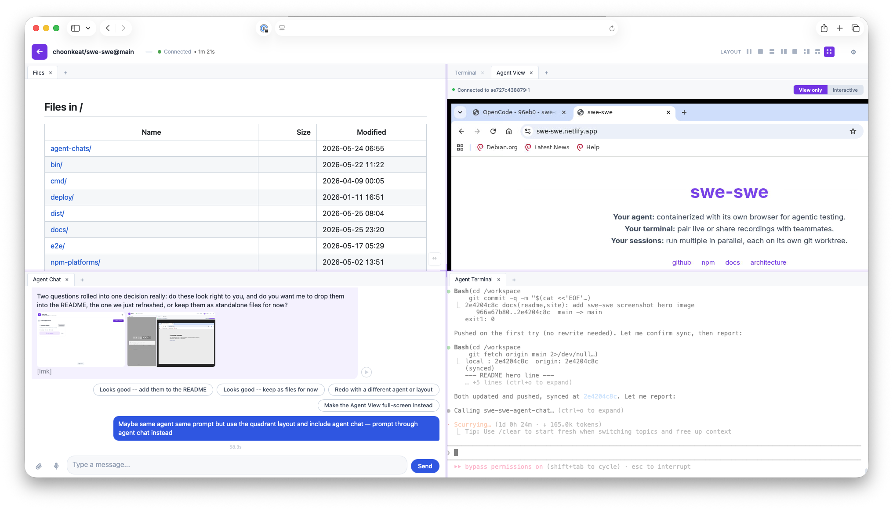

Your agent: containerized with its own browser for agentic testing.
Your terminal: pair live or share recordings with teammates.
Your sessions: run multiple in parallel, each on its own git worktree.

Tell the page what your machine has and it writes your start-up script. Leave everything as it is and you get the ordinary four lines. Pick one. Every check below prints its own answer, so you never have to interpret a wall of output.
docker info >/dev/null 2>&1 && echo "Docker works: pick Docker" || echo "No Docker here: pick one of the others"If you have Docker Desktop, start it and run this again.
command -v git >/dev/null 2>&1 && command -v claude gemini codex goose aider opencode pi >/dev/null 2>&1 && echo "git and a coding agent are installed: pick this one" || echo "Missing one of them: pick none of the above"swe-swe needs either Docker, or git plus a coding agent already on the machine. There is no third way.
Easiest: install Docker, then come back and pick the first option.
Or: install git and one of claude, gemini, codex, goose, aider, opencode, pi — then pick the second option.
command -v node >/dev/null 2>&1 && echo "Node is installed: leave it TICKED" || echo "No Node: UNTICK it"sh -c 'm=""; for b in Xvfb x11vnc websockify; do command -v "$b" >/dev/null 2>&1 || m="$m $b"; done; command -v chromium >/dev/null 2>&1 || command -v chromium-browser >/dev/null 2>&1 || m="$m chromium"; [ -z "$m" ] && echo "All present: leave it TICKED" || echo "Missing:$m -- UNTICK it"'sudo apt-get install -y chromium xvfb x11vnc novnc websockifyOne command per agent you picked. Each makes a throwaway folder, asks the agent to list its tools, then deletes the folder. Your real settings are never touched.
No check for the agents you picked. Leave it ticked, and if the chat never answers you once swe-swe is running, come back and untick it.
Pick one. This applies whichever way you answered above.
anything.<the machine's hostname> reaches it, whatever you put in front of the dot. Running it locally, lvh.me already behaves this way.In a browser on the machine you will actually be using, open anything.<the machine's hostname> — literally the word "anything", or any word you like. If it reaches this machine, pick this one.
https://my-box.example.com, and nothing else on that machine opens. Usual for a hosting service, a rented server with one way in, or a work network that blocks the rest. Nothing to set up.If all you were handed is one address to open, pick this one. To be sure, add :8080 to the end of that address (after the name, before any /) and try to open it in the browser you will actually use. If it does not open, pick this one.
Install Tailscale on this machine and on the one you browse from, sign both into the same account, and reach swe-swe at the name Tailscale gives it. swe-swe neither installs nor configures it; it is just a network your machines are both on.
A tunnel server to connect to, which is a separate thing to run: a machine that stays up, a domain whose subdomains point at it, and your key authorised on it. See the docs. Once it is running, connecting this machine to it is the three steps below the script.
A test version, published ahead of the release so a fix can be tried early. Only people who pick this get it; everyone else stays on the release.
Needs swe-swe 2.38.0 or newer.
Password made at random in your browser, sent nowhere. Keep the copy you paste.
Run this there, not on the machine above. Pick any shared secret you like, as long as both machines use the same one.
About 30 seconds. None of this is a command, so there is nothing to copy.